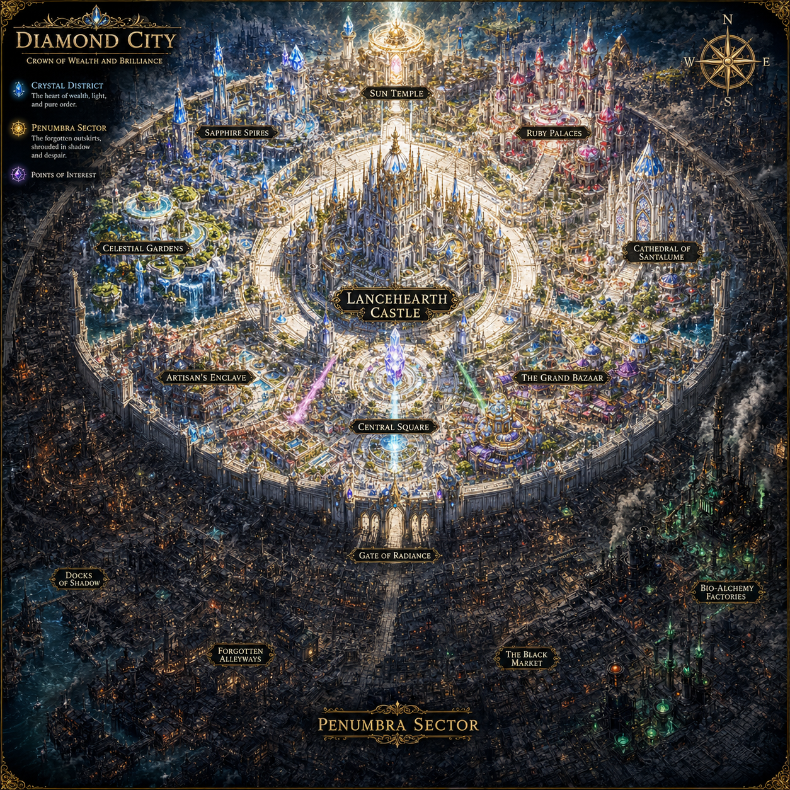
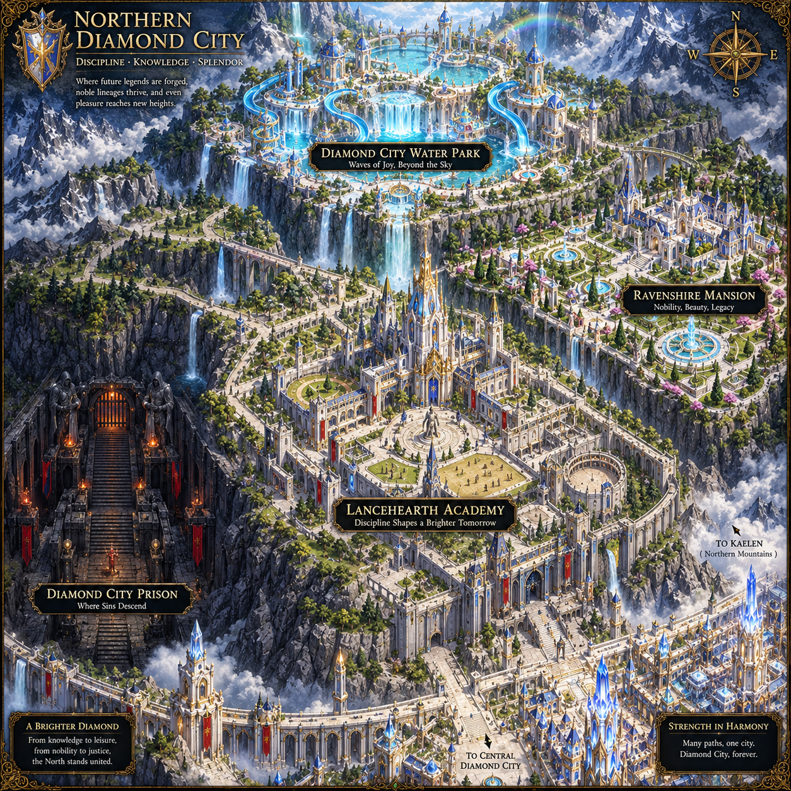

⬆️
Castelo Lancehearth
Sede da Nobreza Real
Celestial Gardens
Jardins de Água e Luz
The Black Market
Comércio Ilegal do Setor Penumbra
Fábricas Bio-Alquímicas
Produção da fumaça verde
Sun Temple
Centro da Fé e Luz Pura
Sapphire Spires
Distrito de Cristal
Ruby Palaces
Residências da Alta Nobreza
Cathedral of Santalume
Local de Adoração Ancestral
The Grand Bazaar
Centro Comercial de Aetheryonite
Artisan's Enclave
Forja de Relíquias e Armas
Central Square
O Coração da Cidade
Gate of Radiance
A fronteira para o Setor Penumbra
Docks of Shadow
Contrabando e Águas Tóxicas
Forgotten Alleyways
A parte mais perigosa do subúrbio

⬇️
Lancehearth Academy
A academia mais prestigiada do mundo onde as lendas do futuro são forjadas.
Mansão Ravenshire
Nobreza, Beleza e Legado. Cassian e sua filha Lirya são os únicos governantes após Erithra tentar ser presa.
Prisão de Diamond City
Para onde os pecados descem. Os prisioneiros são tratados como devem.
Aetheryon Water Park
Ondas de alegria, além do céu. O parque de Diamond City sempre é bem movimentado.